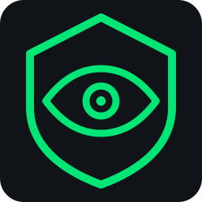

FarmWatch
Steam promotion monitoring for ArchiSteamFarm
Loading…
Analytics
Statistics
Your FarmWatch activity, recorded locally by ASF.
Claims
—
Farming time
—
Completed trades
—
Unique games farmed
—
Claims breakdown
Free-to-Keep packages—
App entitlements / DLC—
Today—
This month—
Farming & trading
Active farming sessions—
Farming today—
Trades today—
Items sent / received—
30-day activity
Loading activity…
Recent claims
Loading statistics…
Runtime overview
Global auto-claim—
Operating mode—
Safety first: auto-claim is disabled by default. Observe-only mode monitors eligible promotions without requesting Steam licences.
Managed bots
Loading bot status…
Safety settings
Observe-only mode
Monitor verified promotions without claiming licences. Keep enabled while testing.
Global auto-claim
Master switch. Requires observe-only to be off and a bot switch enabled.
Changing these settings does not bypass FarmWatch's Free-to-Keep verification, ownership checks, or final activation safety gate.
Developer diagnostics
Live backend snapshot, queue internals, cache counts and dashboard request errors.
Diagnostics have not been loaded.
Backend snapshot
Press “Refresh diagnostics” to inspect FarmWatch internals.
Backend event log
Recent backend decisions, Steam responses and crash exceptions. Events are written to disk and restored after ASF restarts.
Recent dashboard requests & errors
No requests recorded yet.